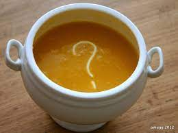
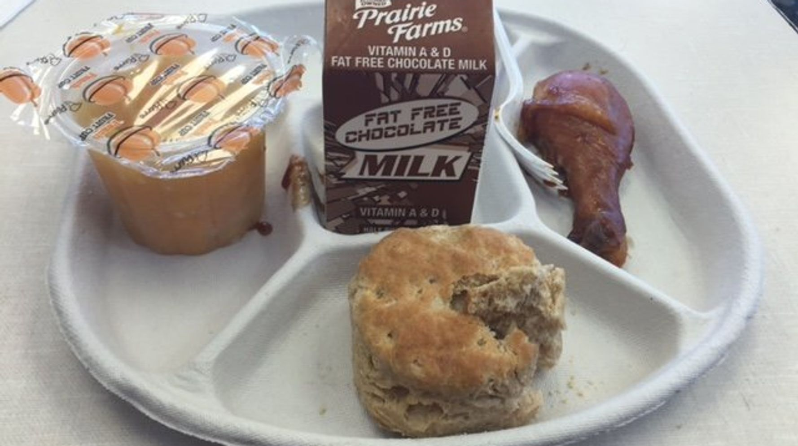

Stuf
All sorts of things can be made in this category, just as long as you don't ask for the ingredients. Online purchace is not yet available and so you will have to
purchace in the back alley of the shop. And don't ask questions.

- Mystery Soup
-
Ingredients vary.
- Funny Looking Altoids
-
The solid form of the next option

- Powdered Sugar...?
-
The powdered form of the former option

- School Cafeteria Food
-
This was the cheapest thing we could afford, and thus, it is our bestseller. Peculiarly, it just sells to schools for long-term storage. We're still not quite sure how that works.